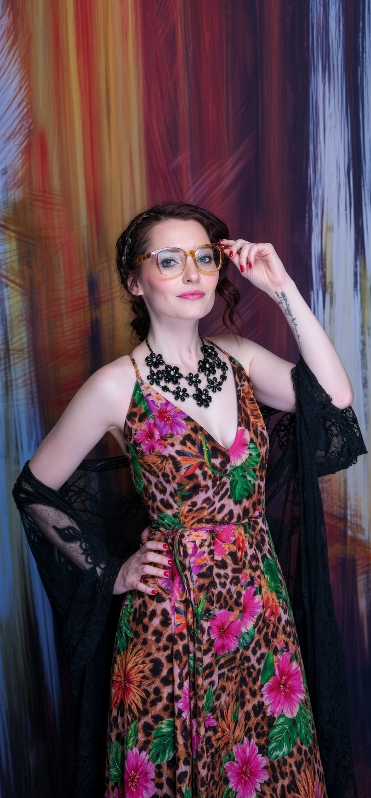

The portfolio of Bre McIlroy
Creativity
without limits.
A creative mind.
A people-first professional.
I bring organization, empathy, and imagination to my work—from administrative support and customer service to writing, digital projects, and community events.
Michigan · Professional & creative portfolio

Behind the creativity
More than
one passion.
I believe good work starts with understanding people.
My background combines customer service and office support with a love of storytelling, design, and shared experiences. I care about the details that help people feel heard and projects move forward.
This portfolio brings those interests together: the work I’ve done, the ideas I’m developing, and the creative journey that continues to shape me.
See my skills & experienceExplore my world
One person. Many possibilities.
A collection of professional experience, creative work, and projects in progress.
Writing & Music
Published poetry, an original manuscript, lyrics, and storytelling.
Explore collection 02Photography
Moments, perspectives, and stories told through a lens.
Explore collection 03Acting & Modeling
Performance, portraiture, and creative expression.
Explore collection 04Fashion & Design
Personal style, imaginative concepts, and visual direction.
Explore collection 05Websites & Apps
Digital projects that turn an idea into an experience.
Explore collection 06Events & Community
Creative events and community leadership that bring people together.
Explore collection 07Travel & Exploration
Travel Easy with Breezy and a developing travel project.
Explore collection 08Career & Achievements
Administrative experience, customer service, and professional skills.
Explore collection
Featured creative project
Unpublished poetry manuscriptLove, Pain, and the Chaos Inside My Brain
A personal collection exploring love, heartbreak, resilience, and the search for self-understanding.
Explore the bookMusic & songwriting
A Siren’s Freedom
Original lyrics. Thirteen songs. Stories of connection, struggle, and finding a way forward.
Let’s connect
Bring a little creativity
to your next chapter.
Explore my experience for employment opportunities, or discover the creative projects we might build on together.
Connections & opportunities